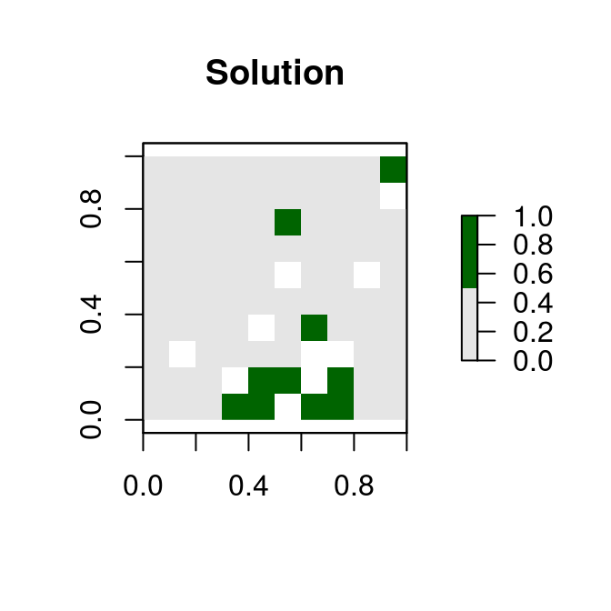

Gurobi Installation Guide
Richard Schuster
2017-11-06
Introduction
Gurobi is the most powerful and fastest solver that prioritizr can use to solve conservation planning problems. This vignette will walk you through the process of setting up Gurobi on your computer. If you encounter any problems while following the instructions below, check out the official Gurobi documentation or the official Gurobi emailing list for more information.
Obtaining a license
One of the potential caveats associated with using Gurobi that you will need to obtain a license. If you are an academic that is affiliated with an educational institution, you can take advantage of the special academic license to use Gurobi for no cost. Once you have signed up for a free account you can request a free academic license.

Once you accept the terms of service you can generate a license.

Now, copy and save the grbgetkey XXXXXXXX-XXXX-XXXX-XXXX-XXXXXXXXXXXX command for later use.
Software installation
The Gurobi software installation itself is platform specific. You will need to download the version that works for your operating system. The documentation page and platform specific “Quick Start Guides” should help you with the installation. On Windows, simply download the installer and follow the prompts. On Linux, you will need to download an archive containing Gurobi, extract its contents, move them them to a suitable location, and update your system’s variables..
Additionally, if you are using RStudio on a Linux system, you might need to add the following line to the file /etc/rstudio/rserver.conf:
rsession-ld-library-path=/opt/gurobi650/linux64/libAfter installing the Gurobi software suite on your computer, you will need to activate your license.
License activation
Now we will activate the Gurobi software using the license you downloaded earlier. To achieve this, simply copy and paste the grbgetkey command into your computer’s command prompt or terminal. After running the grbgetkey command with the correct license code, you should see output that looks like the screen shot below.

We can double check that the license has been successfully activated by running Gurobi from the command line. Assuming you have installed Gurobi version 7.5.1, Windows users can type in the following the following commands:
gurobi_cl c:\gurobi751\win64\examples\data\coins.lpAdditionally, Linux users can test their license activation using the following commands
gurobi_cl /opt/gurobi751/linux64/examples/data/coins.lpIf the license was successfully activated, you should seen an output that looks like the screen shot below.

After activating the license, you now need to install the Gurobi R package named gurobi.
R package installation
We need to install the Gurobi R package named gurobi to use Gurobi from within R. The gurobi R package installation file can be found within the folder where you installed Gurobi. Assuming you installed Gurobi in the default location, Windows users can install gurobi R package by running the following code from within R:
install.packages("c:/gurobi751/win64/R/gurobi_7.5-1.zip", repos = NULL)Additionally, Linux users can install the gurobi R package by running the following code from within R:
install.packages(file.path(Sys.getenv("GUROBI_HOME"), "R/gurobi_7.5-1.zip"),
repos = NULL)Next, you will need to install the slam package because the gurobi R package needs this package to work. Both Windows and Linux users can do this by running the code below in R:
install.packages("slam", repos = "https://cloud.r-project.org")Let’s check that the gurobi R package is installed correctly. To do this, you can try using Gurobi to solve an optimization problem using the R code below.
# load gurobi package
library(gurobi)## Loading required package: slam# create optimization problem
model <- list()
model$obj <- c(1, 1, 2)
model$modelsense <- "max"
model$rhs <- c(4, 1)
model$sense <- c("<", ">")
model$vtype <- "B"
model$A <- matrix(c(1, 2, 3, 1, 1, 0), nrow = 2, ncol = 3,
byrow = TRUE)
# solve the optimization problem using Gurobi
result <- gurobi(model, list())## Warning for adding variables: zero or small (< 1e-13) coefficients, ignored
## Optimize a model with 2 rows, 3 columns and 5 nonzeros
## Variable types: 0 continuous, 3 integer (3 binary)
## Coefficient statistics:
## Matrix range [1e+00, 3e+00]
## Objective range [1e+00, 2e+00]
## Bounds range [1e+00, 1e+00]
## RHS range [1e+00, 4e+00]
## Found heuristic solution: objective 2
## Presolve removed 2 rows and 3 columns
## Presolve time: 0.00s
## Presolve: All rows and columns removed
##
## Explored 0 nodes (0 simplex iterations) in 0.00 seconds
## Thread count was 1 (of 4 available processors)
##
## Solution count 2: 3 2
##
## Optimal solution found (tolerance 1.00e-04)
## Best objective 3.000000000000e+00, best bound 3.000000000000e+00, gap 0.0000%# print the solution
print(result$objval) # objective## [1] 3print(result$x) # decision variables## [1] 1 0 1If you don’t see any error messages, then you have successfully installed Gurobi and can now use it with prioritizr. If do see an error message, then you probably missed a step while installing the package or activating the license.
Solving a prioritzr problem with Gurobi
If you successfully installed Gurobi software and the gurobi R package, you can now try using Gurobi to solve reserve selection problems using the prioritzr R package. Although the prioritizr R package should automatically detect that Gurobi has been installed, you can use the function add_gurobi_solver to customize the optimization process.
Finally, to check that everything has been installed correctly, we will use Gurobi to solve a reserve selection problem created using the prioritzr R package.
library(prioritizr)
# formulate the problem
p <- problem(sim_pu_raster, sim_features) %>%
add_min_set_objective() %>%
add_relative_targets(0.1) %>%
add_gurobi_solver()
# solve the problem
s <- solve(p)## Optimize a model with 5 rows, 90 columns and 450 nonzeros
## Variable types: 0 continuous, 90 integer (90 binary)
## Coefficient statistics:
## Matrix range [2e-01, 9e-01]
## Objective range [2e+02, 2e+02]
## Bounds range [1e+00, 1e+00]
## RHS range [3e+00, 7e+00]
## Found heuristic solution: objective 2145.27
## Presolve time: 0.00s
## Presolved: 5 rows, 90 columns, 450 nonzeros
## Variable types: 0 continuous, 90 integer (90 binary)
## Presolved: 5 rows, 90 columns, 450 nonzeros
##
##
## Root relaxation: objective 1.726522e+03, 11 iterations, 0.00 seconds
##
## Nodes | Current Node | Objective Bounds | Work
## Expl Unexpl | Obj Depth IntInf | Incumbent BestBd Gap | It/Node Time
##
## 0 0 1726.52215 0 4 2145.26789 1726.52215 19.5% - 0s
## H 0 0 1792.7738341 1726.52215 3.70% - 0s
##
## Explored 1 nodes (11 simplex iterations) in 0.00 seconds
## Thread count was 1 (of 4 available processors)
##
## Solution count 2: 1792.77 2145.27
##
## Optimal solution found (tolerance 1.00e-01)
## Best objective 1.792773834063e+03, best bound 1.726522151579e+03, gap 3.6955%# plot solution
plot(s, col = c("grey90", "darkgreen"), main = "Solution",
xlim = c(-0.1, 1.1), ylim = c(-0.1, 1.1))
If you have managed run the code on your system without encountering any errors, then you have correctly installed Gurobi and can begin using it to solve your very own conservation planning problems.